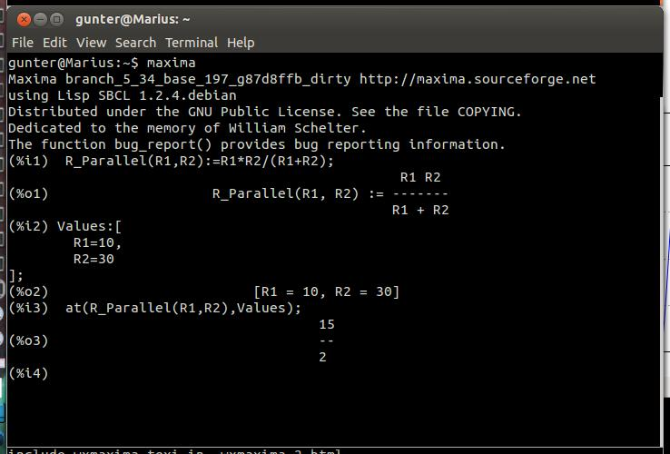
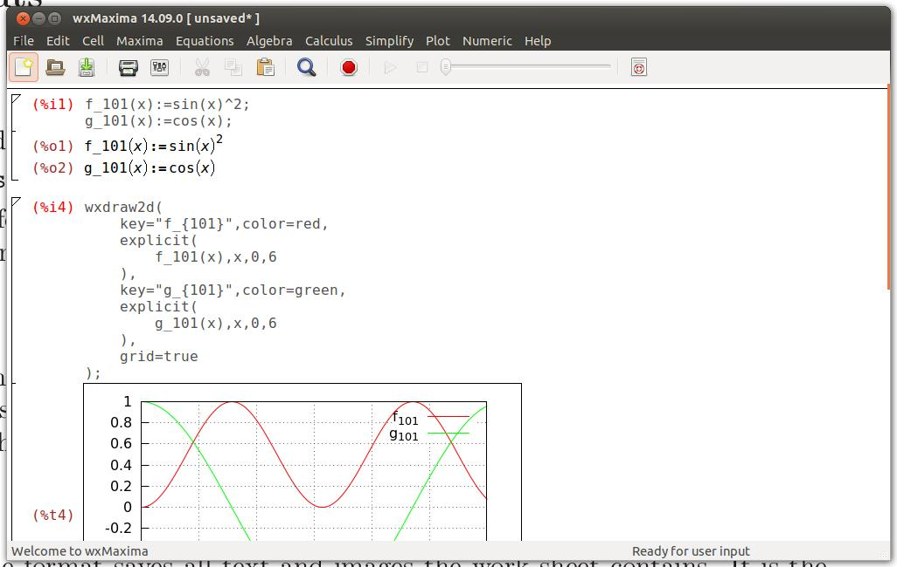
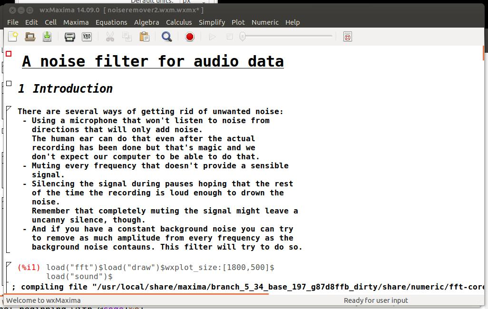

| [ < ] | [ > ] | [ << ] | [ Up ] | [ >> ] | [Top] | [Contents] | [Index] | [ ? ] |
| [ < ] | [ > ] | [ << ] | [ Up ] | [ >> ] | [Top] | [Contents] | [Index] | [ ? ] |
In the open-source domain big systems are normally split into smaller projects that are easier to handle for small groups of developers. For example a CD burner program will consist of a command-line tool that actually burns the CD and a graphical user interface that allows the user to use it without having to learn about all the command-line switches and in fact without using the commandline at all. One advantage of this approach is that the developing work that was invested into the command-line program can be shared by many programs without having to re-invent the wheel: The same cd-burner command-line program can be used as a “send-to-cd”-plug-in for a file manager application, for the “burn to CD” function of a music player and as the CD writer for a DVD backup tool. Another advantage is that splitting one big task into smaller parts allows to provide several user interfaces for the same program: A computer algebra system could be be the logic behind a arbitrary precision calculator application, it can do automatic transforms of formulas in the background of a bigger system (e.G. Sage) or actually used as a full-fledged computer algebra system (which is the case with wxMaxima).
| [ < ] | [ > ] | [ << ] | [ Up ] | [ >> ] | [Top] | [Contents] | [Index] | [ ? ] |
Maxima is a full-featured computer algebra system (CAS). In other words it is a program specialized in solving mathematical problems by rearranging formulas and finding a formula solving the problem as opposed to just outputting the numeric value of the result.
There is extensive documentation for maxima available in the internet part of which can be found in wxMaxima’s help menu. To make access to the documentation easier if the <Help> key is pressed (on most systems that would be the <F1> key) wxmaxima’s context-sensitive help feature will automatically jump to maxima’s manual page for the command at the cursor.
| [ < ] | [ > ] | [ << ] | [ Up ] | [ >> ] | [Top] | [Contents] | [Index] | [ ? ] |
wxMaxima is a graphical user interface that provides the full functionality and flexibility of maxima providing the user with a graphical display and many features that make working with maxima easier. For example wxMaxima allows to export any cell’s contents (or, if that is needed, any part of a formula, as well) as text, as LaTeX or as MathML specification at a simple right-click.
The calculations itself are done by the maxima command-line tool in the background.
| [ < ] | [ > ] | [ << ] | [ Up ] | [ >> ] | [Top] | [Contents] | [Index] | [ ? ] |
Most of wxMaxima should be self-explaining. Therefore this manual will concentrate on describing facts that won’t need more time to read about than to be actually explored.
| [ < ] | [ > ] | [ << ] | [ Up ] | [ >> ] | [Top] | [Contents] | [Index] | [ ? ] |
One of the very few things that aren’s standard ist that wxMaxima organizes the data for maxima in cells that are only evaluated (which means: sent to maxima) when the user request this. This approach might feel unfamiliar at the first sight. But it drastically eases work with big documents (where the user won’t want every small change at the beginning automatically to trigger a full re-evaluation of the whole document) and is very handy for debugging.
The cells wxMaxima automatically creates on typing some text are maxima input cells that will eventually be sent to maxima.

On evaluation of an input cell’s contents the input cell maxima
assigns a label to the input (by default shown in red and recognizable
by the %i) by which it can be referenced lateron. The output
maxima generates will be shown in a different style and preceded by maxima
by a label beginning with %o.
Besides the input cells wxMaxima allows for text cells for documentation, image cells, title cells, chapter cells and section cells; Every cell has it’s own undo buffer so debugging by changing the values of several cells and then gradually reverting the unneeded changes is rather easy.
| [ < ] | [ > ] | [ << ] | [ Up ] | [ >> ] | [Top] | [Contents] | [Index] | [ ? ] |
The worksheet is organized in cells that work like very much like the styles word processors offer. Each cell can contain one of the following types of content:
By default behavior of wxMaxima if text is input is to automatically create a math cell. Cells of other types can be created using the Cell menu or using the hotkeys shown there.
| [ < ] | [ > ] | [ << ] | [ Up ] | [ >> ] | [Top] | [Contents] | [Index] | [ ? ] |
While it sometimes is both desirable to allow selecting multiple cells or only part of a cell for export or Drag-and-Drop beginning such an action in the middle of one cell and ending it in the middle of another will most certainly lead to unexpected results.
wxMaxima works around this by defining two types of cursors wxMaxima will switch between automatically when needed:
As long as the cursor is inside a cell search operations will limit ther scope to the current cell.
| [ < ] | [ > ] | [ << ] | [ Up ] | [ >> ] | [Top] | [Contents] | [Index] | [ ? ] |
wxMaxima contains an autocompletion feature that is triggered via the menu (Cell/Complete Word) or alternatively by pressing the key combination <Ctrl>+<k>. Besides completing the current command’s name the autocompletion feature is able to show a template for most of the commands indicating the type (and meaning) of the parameters this program expects. To activate this feature press <Shift>+<Ctrl>+<k> or select the respective menu item (Cell/Show Template).
| [ < ] | [ > ] | [ << ] | [ Up ] | [ >> ] | [Top] | [Contents] | [Index] | [ ? ] |
Computers traditionally store characters in 8-bit values: This allows for a maximum of 256 different characters and all letters, numbers, and control symbols (end of transmission, end of string, lines and edges for drawing rectangles for menus etc.) of nearly any given language fit there.
For most countries the codepage of 256 characters that has been chosen doesn’t include greek letters, though. To overcome this limitation unicode has been invented: A method of including characters that aren’t normally used in the english language in a text that (as long as only the basic form of latin characters is used) looks like plain 8-bit ASCII.
Maxima allows for unicode characters if it runs on a lisp that supports them and if the wxWidgets library wxMaxima is built on supports unicode characters, too, wxMaxima can be built with unicode support. In this case it provides a method of entering greek characters:
If the system does not provide unicode support wxMaxima will still provide a method of showing greek characters: Variable names like “alpha” are always displayed as the corresponding greek symbols.
It is to note that a maxima running on a lisp without unicode support won’t be able to deal with files that contain special unicode characters.
| [ < ] | [ > ] | [ << ] | [ Up ] | [ >> ] | [Top] | [Contents] | [Index] | [ ? ] |
Shortcuts to the most important maxima commands and a history of the last issued commands can be accessed using the side panes. They can be enabled using the “Panes” entry in the “Maxima” menu.
| [ < ] | [ > ] | [ << ] | [ Up ] | [ >> ] | [Top] | [Contents] | [Index] | [ ? ] |
Markdown in many cases collides with the notations that are frequently used for mathematics. wxMaxima will recognize bullet lists, though, for the HTML and TeX export when the items are marked with stars.
Ordinary text * One item, indentation level 1 * Another item at indentation level 1 * An item at a second indentation level * A second item at the second indentation level * A third item at the first indentation level Ordinary text |
| [ < ] | [ > ] | [ << ] | [ Up ] | [ >> ] | [Top] | [Contents] | [Index] | [ ? ] |
| [ < ] | [ > ] | [ << ] | [ Up ] | [ >> ] | [Top] | [Contents] | [Index] | [ ? ] |
‘.mac’ files are ordinary text files that can be read using maxima’s read command:
%i1 read("test.mac");
|
They can be used for writing own libraries but since they don’t contain enough structural information they cannot be read back directly into wxMaxima.
| [ < ] | [ > ] | [ << ] | [ Up ] | [ >> ] | [Top] | [Contents] | [Index] | [ ? ] |
‘.wxm’ files contain the input for maxima, as well as any text cells, title cells and chapter or section cells the user typed in. Pictures and maxima’s output aren’t saved along with the ‘.wxm’ file, though.
| [ < ] | [ > ] | [ << ] | [ Up ] | [ >> ] | [Top] | [Contents] | [Index] | [ ? ] |
This xml-based file format saves all text and images the work sheet contains. It is the preferred file format now and comes in two flavors:
This comes at the cost, though, that the change of even a single line of text in the uncompressed version tends to completely change the structure of the compressed version of a file. A version control system that deals with such a file will - however optimized it might be on handling differences between binary files - will therefore have to track (and to store) a much higher number of differences between two file versions than necessary; Since most version control systems compress the data they store on the server the server space occupied by the initial version of both ‘.wxmx’ flavors should be nearly identical in size.
| [ << ] | [ >> ] | [Top] | [Contents] | [Index] | [ ? ] |
This document was generated by Gunter Königsmann on February 15, 2015 using texi2html 1.82.